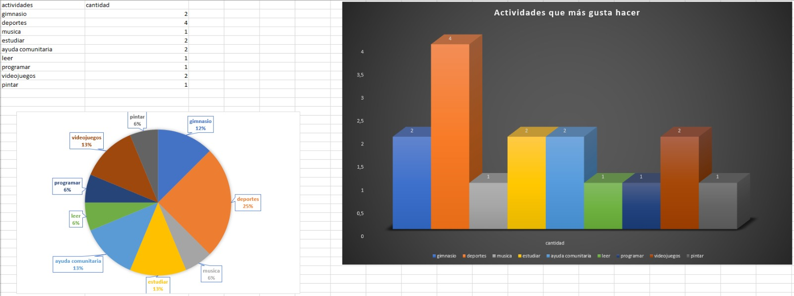
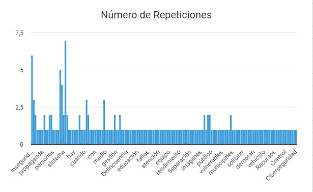

clase 15 agosto inteligencia artificial
En la clase de hoy aprendi a usar un poco mas el excel ya que no lo uso mucho y en la actividad de hoy pude usarlo ademas de que pude aprender un poco sobre git hub y sus funcionalidades
Imagen de temas a tratar
 vimos que datos se repetían y buscamos graficar de cierto que nos brindara dicha información en una grafica de pastel
vimos que datos se repetían y buscamos graficar de cierto que nos brindara dicha información en una grafica de pastel
Imagen de actividades que mas gusta hacer

Se agruparon las actividades que eran similares y se contaron manualmente.
Imagen de actividades de creatividad
 Elegimos la columna número 5 y sacamos las palabras repetidas con la ayuda de chatGPT y las rectificamos manualmente e hicimos
lo mismo con las palabras únicas (que no se repetían)Luego último hicimos la suma de las palabras repetidas y también sacamos
el número de palabras únicas y por último hicimos un gráfico circular 3D con los números de las palabras repetidas.
Elegimos la columna número 5 y sacamos las palabras repetidas con la ayuda de chatGPT y las rectificamos manualmente e hicimos
lo mismo con las palabras únicas (que no se repetían)Luego último hicimos la suma de las palabras repetidas y también sacamos
el número de palabras únicas y por último hicimos un gráfico circular 3D con los números de las palabras repetidas.
Imagen de inteligencia artificial mas usadas
 de manera manual tome los nombres de ias distintas y luego conté cuantas veces se repetía cada una, para al final juntar los valores
y generar un anillo con Excel donde podemos ver que lo que vas se repite es chatgpt.
de manera manual tome los nombres de ias distintas y luego conté cuantas veces se repetía cada una, para al final juntar los valores
y generar un anillo con Excel donde podemos ver que lo que vas se repite es chatgpt.
Imagen de inteligencia artificial mas usadas
 SE REALIZO UTILIZANDO FORMULA DE EXCEL Y TABLAS DINAMICAS..
SE REALIZO UTILIZANDO FORMULA DE EXCEL Y TABLAS DINAMICAS..
Imagen de habilidades blandas
 Nos dimos cuenta que hay varias coincidencias y todas apuntan hacia el hecho de que todos contamos con habilidades blandas
suficientes y exactas para llevar a cabo un excelente trabajo en equipo..
Nos dimos cuenta que hay varias coincidencias y todas apuntan hacia el hecho de que todos contamos con habilidades blandas
suficientes y exactas para llevar a cabo un excelente trabajo en equipo..
Imagen de listado de problemas

basicamente lo que hicimos fue indentificar, contar las palabras y finalmente estructuramos los resultados en una tabla de conteo
que permite ver rápidamente la frecuencia de cada palabra y proporciona una vision general de los temas mas mencionados. los cuales son la inseguridad,
contaminación y transporte.
Imagen de inteligencia artificial
se indentifico las inteligencias artificiales mas usadas y asi mismo se dividieron los textos en palabras para asi poder sacar y contar todas las inteligencia mas usadas.